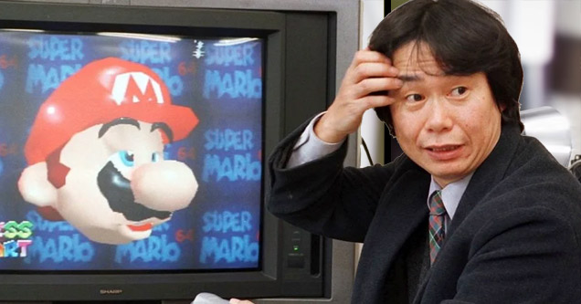

Reginald Fils-Aimé born (March 25, 1961) is an American businessman best known for being the president and chief operating officer of Nintendo of America, the North American division of the Japanese video game company Nintendo, from 2006 to 2019. Prior to his promotion to president and COO, Fils-Aimé was Executive Vice President of Sales and Marketing.Fils-Aimé retired as president of Nintendo of America on April 15, 2019 after an announcement on February 21, and was succeeded by Doug Bowser. He subsequently became a Leader in Residence at Cornell University and later named to the Board of Directors for Brunswick Corporation, GameStop and Spin Master.

Desmond Daniel Amofah (May 12, 1990 – c. June 19, 2019), better known as Etika, was an American YouTuber, online streamer, rapper, and model. Amofah was best known for his highly energetic reactions to Super Smash Bros. character reveals and Nintendo Direct presentations, and for playing and reacting to various games. He was a son of Ghanaian politician Owuraku Amofah, and a resident of Brooklyn, New York for most of his life. May he rest in peace.

Shigeru Miyamoto (Japanese: 宮本 茂, Hepburn: Miyamoto Shigeru, born November 16, 1952) is a Japanese video game designer, producer and game director at Nintendo, where he serves as one of its representative directors. Widely regarded as one of the most accomplished and influential designers in the history of video games, he is the creator of some of the most acclaimed and best-selling game franchises of all time, including Mario, The Legend of Zelda, Donkey Kong, Star Fox and Pikmin.
Captain Ninteno Dude is a YouTube gamer from the United States. Captain Nintendo Dude is a well-known Nintendo gamer who runs the ‘Alex CND’ YouTube channel. He is also well-known for his other social media accounts. He was the first person to get the Nintendo switch.